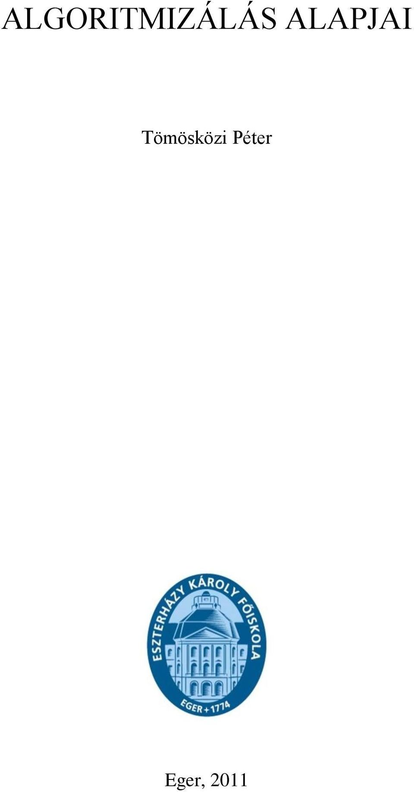

Programtervezési ismeretek
A Programtervezési ismeretek tárgy célja a programozási alapok elméleti kiterjesztése. Olyan elméleti alapok elsajátítása, amely minden további programozási nyelvnek része. Modellek és alapvető algoritmusok fejlesztése, használata. Elemi algoritmusok megértése, ezek ábrázolása többféle módon pl: pszeudókód, folyamatábra, struktrogram.
Az elsajátított informatikai eljárások és módszerek segítségével képes valós üzleti, szervezeti körülmények között az alkalmazások működési feltételeinek feltárására, előnyök, veszélyek, kockázatok mérlegelésére és kommunikációjára. Képes üzleti folyamatok megértésére, elemzésére, a végrehajtást segítő szoftveralkalmazások követelmény-specifikációjának elkészítésére, elvégzésére, egyszerűbb programozási feladatok végrehajtására. Képes az üzleti és informatikai szakemberekkel együttműködve, a leghatékonyabb IT-megoldások felhasználásával gazdasági problémák megoldási változatainak elkészítésére, informatikai támogatás, fejlesztés kezdeményezésére, végrehajtására. Képes adatbázisok menedzselésével kapcsolatos feladatok ellátására, egyszerű adatmigrációs feladatok megoldására. Képes a gazdasági alkalmazások adaptációjára, az IT-alkalmazások bevezetéséhez szükséges szervezeti változtatások kezdeményezésére, a végrehajtásban az együttműködésére. Képes rendszerfejlesztési elvek és módszerek alkalmazására, fejlesztőeszközök (üzleti modellezés, illetve számítógéppel támogatott fejlesztés eszközei) használatára.

Forrás:
Bing AI